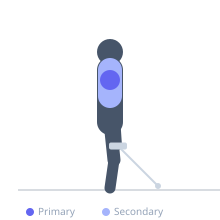

Exercise guide / Leaning Cable Lateral Raise
Leaning Cable Lateral Raise
A cable lateral raise performed while the lifter leans away from the pulley, anchoring one hand on the cable column for support. The lean creates a longer moment arm at the beginning of the movement (where free-weight lateral raises are easiest) and provides constant tension throughout, making it superior to dumbbell lateral raises for medial deltoid development.
Primary muscles
medial deltoid
Secondary muscles
anterior deltoid
posterior deltoid
trapezius middle
Stabilizers
transverse abdominis
external oblique
tensor fasciae latae
Equipment
Cable Machine (Low Pulley)


Starting position
- Stand sideways to the cable pulley, gripping the upright with the near hand for support. The far hand holds the cable handle.
Setup
- Attach a single handle to the low cable pulley. Stand sideways, lean away from the machine, and grip the cable handle with the far hand.
Steps
- Step 1: Lean away from the cable to create a natural stretch on the medial deltoid.
- Step 2: Raise the arm upward and out to the side until it is horizontal or slightly above.
- Step 3: Hold briefly at the top, squeezing the medial deltoid.
- Step 4: Lower under control back to the starting position.
Coaching cues
- Lean into it
- Raise with the deltoid, not the trap
Breathing
- Exhale on the raise. Inhale on the return.
Range of motion
- Arm raised to horizontal or slightly above at the top. Full arm by the side at the bottom.
Tempo
- 2-1-2-0
Common mistakes
- Using momentum to swing the arm up instead of controlled deltoid abduction
- Allowing the torso to rotate during the raise
Safety
- The cable provides constant tension even at the bottom — this is the advantage over dumbbells
- Keep the support arm straight
Training
- hypertrophy: 8–15 reps
- hypertrophy: 3–4 sets
- Rest: {'hypertrophy': 90}